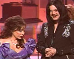
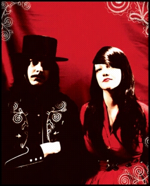
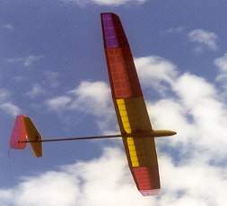

No, seriously!
Three years ago today, Kelly and I were married! It has been lots of fun and I love her just as much as I did the day I married her — but now the relationship has a desirable, rich patina to it. Perhaps a better metaphor is like a block of cheese — yes, the cheese has more mold on it, but the cheese is now more stinky. “How on earth is that better, Ben?!” Well, as you may know — the stinkier the cheese, the better the flavor.
So there you have it Kelly! I love our stinky relationship.
¨
Kelly and I (along with Jackson and Medina) went to Headliners Music Hall last night to have a rockin’ good time with The Black Keys. Opening guest, The Hentchmen.
The Hentchmen, with someone who appears to be a young Andy Dick on guitar, threw down the sort of greaseball rat-fink rock jams you might expect out of the Dead Kennedys, had they been formed a decade or two earlier. Good stuff, and the crowd seemed to enjoy (as did I).
The Black Keys, however, despite being on two guys (Dan on the guitar and Patrick on the drums) seem to control the room like no others. Patrick positions his drums on the left, mere inches from the front of the stage, with Dan on the right. Patrick Carney possesses a fury and determination for the drums that is at both infectious and scary. He is a lanky 6-foot-something, and his drum kit seems dwarfed by his long frame. When he sits at the kit, it appears that he’s attempting to ride a tricycle that is far to small. When he plays, it’s as if he’s on that tricycle, but being attacked by bees. Keep in mind, he’s like inches from the edge of the stage — arms a-blur with the speed of a flip-book animation, but with power of a man swinging sledge and busting rocks. I feared for the safety of those in the front row. “Would they be rocked to death?!” I wondered. As a visual contrast, Dan Auerbach is a short man (in relation to Carney’s height), but possesses a presence, voice and talent beyond his years (not to mention vicious guitar face). Between the two of them, they convey this infectious power of rhythm. The best parts of blues and soul with the on-the-brink excitement that only the rawk can provide. It’s dangerously exciting stuff when you are right close to it, and a venue the size of Headliners fits that bill right nice.
I was truly rocked by their performance last night, and judging by other shows I have seen, this one was different. Wimmens was swaying their hips and dancing with theys men, you see. The crowd was genuinely into it (as was I), to the point where they were called back for two encores. Akron, Ohio represent!
¨
A co-worker of mine, who dresses fabulously informed me that local Italian eatery Melillo’s is considering starting up a bocce league of some sort. It’s sort of gelling right now — and I’d say the time is nigh for such developments! Melillo’s already has a bocce pit behind their restaurant, so why not start a league there?

I don’t know why bocce hasn’t “caught on” around town – it really is a “sport” that can be done anywhere. Cholly and I regularly play in the gravel parking lot here at work! Also, it is a sport conducive to drinking (after all, the Italians did invent it). Bocce ball in one hand, glass of wine or pint of beer in the other! Fantastico!
There is a thread on the Louisville Hot Bytes forum entitled “bocce ball league“. If interested, check it out.
¨
That, my little candy-cane children, is the name of the next (possibly last?) White Stripes album. It is due out June 7th, while the first single “Blue Orchid” is due out on radio in the US on April 19th.
The promo site for Get Behind Me, Satan has not yet “gone live”, and only holds a single image of a pale, white hand (Meg?) holding a white apple.

Further indications of awesomeness include Jack’s awesome mustache and long-hair combo from this year’s Grammy’s, where he stood aside Loretta Lynn when she picked up the statue for Best Country Album.
Pitchforkmedia has the tracklisting, fan site Triple Tremelo has the cover-art for Blue Orchid, and I am waiting breathlessly for this piece of man-made god-rawk to come tumbling from the heavens. Joy!

¨

There are some people I know – even some readers of this not-so-anonymous blog – who blog about any number of things that would normally be confined to either their subconscious or chatted over a neighbor’s fence (perhaps over a fabulous martini). In the case of work-related gossip, I would wager that if you are going to involve yourself in such an endeavor, it is best to do this anonymously. So, whilst trolling through MeFi earlier this morning, I happened upon a link to the Electronic Frontier Foundation‘s How to Blog Safely (About Work or Anything Else).
One thing they don’t mention here is that any traffic (read: email) that you send using your company’s email servers is their property and so you should not consider your work email “private”. That is what a Gmail account is for!
While they do mention “limiting the audience” of your blog, I have found that unless you restrict your readership manually, anyone and everyone you know will eventually stumble upon your blog. My furthest stretch has been the dairy farmer that lived down the country road in Botetourt County, Virginia, where my great-uncle Joe lives. He mentioned to my Uncle Joe that he had read a website about my and Kelly’s adventures in Eagle Rock, VA. This should underscore how important not giving away your particulars is when attempting to stay anonymous. The careful and intrepid information-seeker will no-doubt attempt to put together a sketch of you through the scraps of info they can find on the internet. For example — I once had a man keep calling my house and requesting that he speak with Pablo Escobar (the now-deceased Columbian druglord). After a pair of short calls, I decided to find out just who my caller was, only armed with his phone number. Thanks to reverse phone directories, Google, and some luck, I found his name, address, his AOL username (which could be contacted via AIM), his homepage, highschool, job history, etc, etc. That turned his next call into an hour-long tango of “I know more about you than you probably ever cared me to know”. I really just wanted the guy to quit calling the house at all hours, but I figured I might as well have fun with it.
So — take care out there on the Intarweb. It is a wild and wonderful place. But, as with most wild and wonderful places, you could be eaten by bears (and by eaten by bears, I mean your job or life could be mauled. Not by bears, but by people who just don’t get the joke).
“With super-powers comes super-responsibility”
– “The Amazing Strobe”
¨

After nearly 6 months of building, I have finally completed my Allegro-Lite sailplane! I started at the beginning of November last year, and just this week finished it up. It’s a great feeling to finally get something like this done, and just in time for soaring season! To celebrate, I have started cleaning up my shop downstairs to make way for the ship I’m going to use for the Louisville Area Soaring Society’s Speed 400 F5J Electric Sailplane Competition coming up in August.
Anyway, back to the Allegro-Lite — it’s a really cool plane, from a completely nerdy point of view. You see — most “competitive” (meaning “efficient”) model sailplanes these days are really expensive — they involve things like hi-load foam, Kevlar, carbon-fiber, and generally a lot of expensive composite materials. Those materials can make things really strong, and yet really light — which is something you need for a really efficient wing on a plane. Well — the Allegro-Lite is an exception because A) it’s made from wood with some carbon fiber (not terribly expensive, B) it is really light and C) despite the previous two things, it is REALLY strong! The design is completely free to the public (courtesy of Dr. Mark Drela from MIT), and there are plenty of other Drela-devotees around to offer help, and in the case of the Allegro-Lite, a near-complete walkthrough. I’ve even pitched in myself with a build gallery with annotations.
So, this summer I intend on getting out and flying as much as I can, and competing as often as I can in regional contests. The Allegro-Lite will be along for the tow as well!
¨